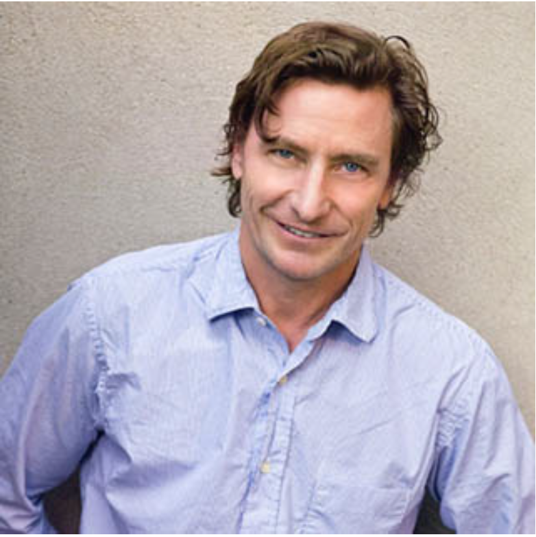

ABOUT
We are an independent and integrated creative agency.
For 20 years, our guide has been one North Star: the brand.
We believe that all of the brands we work with have an opportunity to bring a singular voice and contribution to the world, and it is our purpose to develop, express, and protect that voice through every extension.
Our specialties in powerful storytelling, strong visuals, and intelligent strategy have made an indelible mark on our partners and their industries.
Our campaign, packaging, and brand identity work reaches audiences across the globe and we are driven by the challenge of bringing a unique, lasting, and compelling point of view to our brands and their users.
THE PEOPLE
Doug Lloyd
Doug Lloyd is the founder and creative director of Lloyd&Co. Over the last 20 years, he has been responsible for re-envisioning the ways in which clients can connect with their consumers. Doug has worked with a prestigious roster of clientele in the fashion, beauty and hospitality worlds. He has also worked extensively in the editorial world, serving as creative director for such titles as Mademoiselle, Arena Homme +, Muse Magazine and Big.
Prior to founding Lloyd&Co., Doug was art director at Barneys New York, and senior art director at the Gap in charge of Baby Gap, Gap Kids and Gap advertising. He has been awarded numerous design awards including the New York Type Directors Club, Photo Design, and American Photography, as well as numerous FIFI awards over the last 10 years. Lloyd&Co. and Doug Lloyd have been featured in the New York Times, Wallpaper Magazine, i.D Magazine, WWD, Creative Arts, Graphis Magazine, American Photo, Big, Commercial Photo, Elle Decor, Composite Magazine, Designer’s Workshop, and Art Direction Magazine.
Jodi Sweetbaum
As president and managing director of Lloyd&Co., Jodi has been responsible for the marketing and branding strategy for all clients since 1996. While running the business end of Lloyd&Co., Jodi ensures that the company is brand-centric, developing a strong, interactive dialogue between each client and the consumer.
Jodi’s career began at MTV, in its inception phase in early 1980, followed by several years of freelance producing for music videos, documentaries and commercials. As head of global creative services at Elizabeth Arden and of in-house advertising and design at Calvin Klein, Jodi became fully immersed in luxury brand advertising and marketing. Jodi joined Lloyd&Co. and its founder Doug Lloyd when the agency was a four-person shop. Lloyd&Co. has since that time grown to a team of 35, with extensive capabilities in branding, design and advertising.